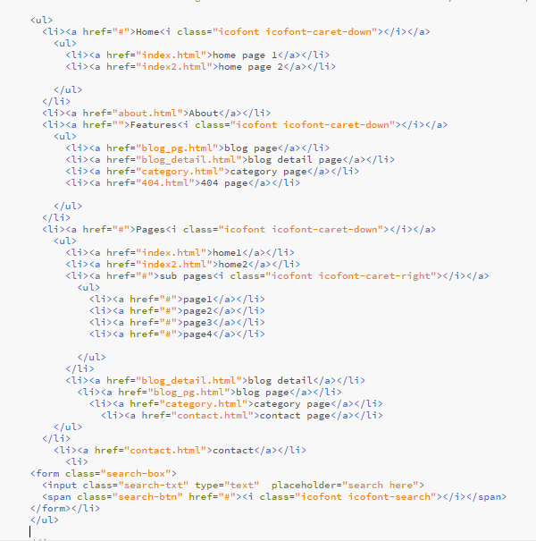
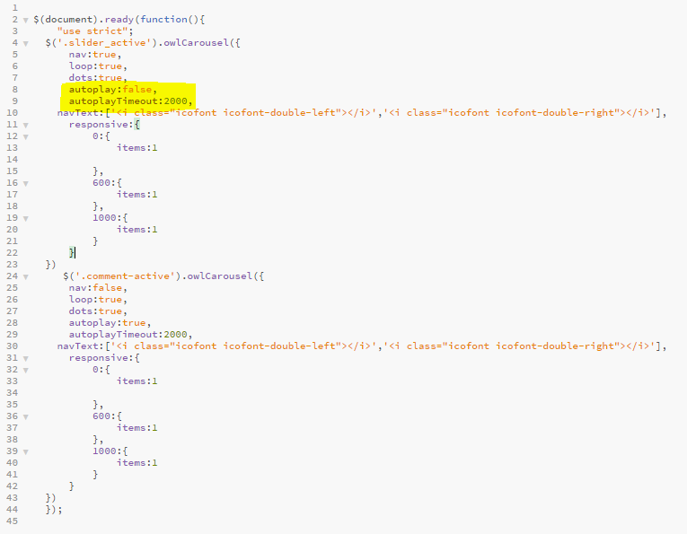
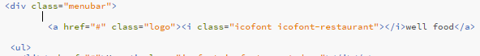

Thanks for having purchased Typo Blog - HTML Template. If you have any questions that are beyond the scope of this help file, please feel free via http://asitworld.com/ . Thank you so much!
The template has 8 pages
The template has 8 HTML files
The template has 8 CSS files
This template includes 8 Javascript files.
If you want to change slider settings, for example, you want turn on autoslideshow or change time delay you can find all slider settings here js/script.js
you can set here with image
